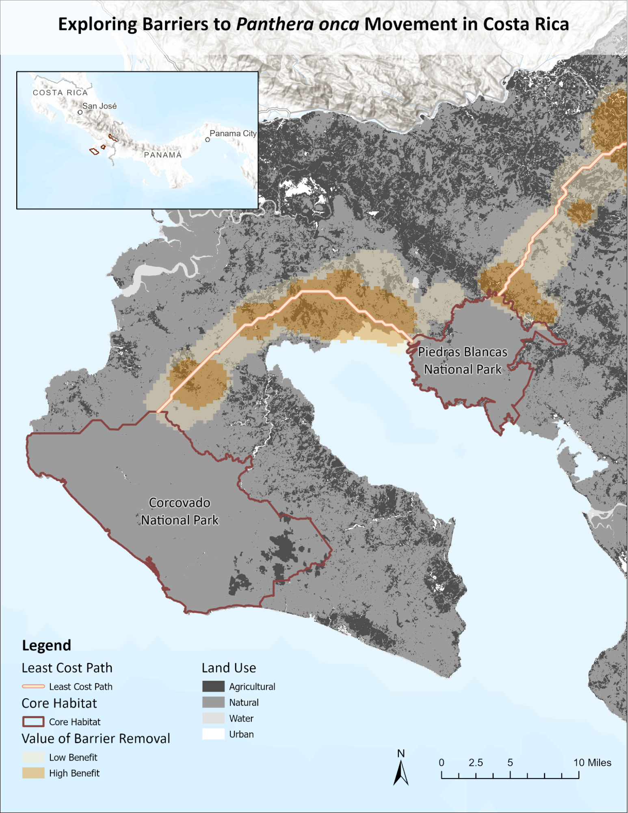
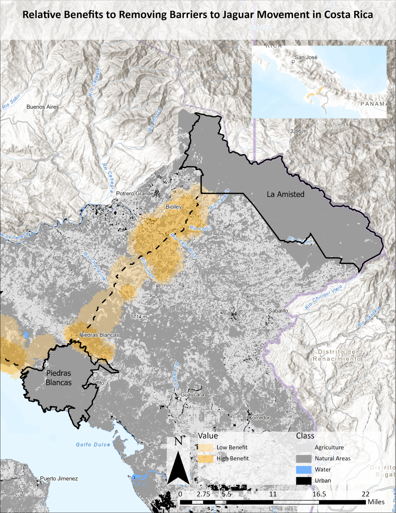

Background:
As a keystone species, jaguars (Panthera onca) regulate trophic dynamics of tropical rainforests in Central America. According to the 2016 IUCN Red List of Threatened Species, P. onca is classified as near threatened after losing 50% of its historic range with population size continuing to decline over time (Quigley et al., 2017; Sanderson et al., 2002).
Problem:
Habitat loss and fragmentation associated with agricultural and urban expansion have contributed to P. onca population decline. In Southern Costa Rica, fragmentation led to the creation of two disconnected populations in the region, which reduces population viability and threatens P. onca persistence. Therefore, it is critical to identify opportunities to remove barriers to movement between core habitats and enhance connectivity.
Approach:
We used Circuitscape to identify the least-cost path and barriers to P. onca movement between three core habitats in Southern Costa Rica. To identify the least-cost path, we used Linkage Mapper to build a network and map linkages using the core areas and a resistance layer created by Folger and Brock. The resistance layer includes surface features such as roads, elevation, and land cover that can influence species movement and landscape connectivity. Barriers to movement were determined using the Barrier Mapper tool within Linkage Mapper set a detection radius of 1000m. Barrier Mapper identifies critical connectivity barriers and reveals the value (benefit) of barrier removal to improve connectivity. In our analysis, we reclassified values greater than 0.75 in the barrier raster to represent opportunities where the value and benefit of barrier removal are high. To facilitate our understanding of broader land use influence on connectivity, we reclassified specific land use categories to four bins: agriculture, natural areas, urban, and water. Agriculture includes coffee, teak, palm, and pineapple plantations, as well as pasture. Natural areas include forests, mangroves, natural palm forests, paramos, and wetlands.
Results:
The least-cost path connecting P. onca core habitat in Corcovado, Piedras Blancas, La Amisted National Parks primarily crosses natural areas and avoids agricultural land (Fig 1,2). Within natural areas, P. onca preferably navigates through primary and secondary forests. Connectivity barriers occur where agriculture intersects with the least cost path (Fig 1,2).
Conclusions:
Our analysis revealed barriers along the least-cost path that would be most beneficial to improve habitat connectivity between core P. onca habitat. These areas are not exclusively natural forest, however, and include agricultural parcels that would be difficult to remove. Land owners could oppose the project, as a one time payment for their land would deprive them of the longer term income they could have from continuously farming. Easements or payments for ecosystem services could alleviate this problem, however, as farmers could allot a certain amount of their plot to fallow and become forest while still actively farming.
If land purchases or easements could be acquired, the soil and vegetation in these lands are likely heavily degraded due to extensive agriculture. This would require some degree of restoration to make the habitat more navigable for P. onca. The costs of a project like this would be incredibly high, and would likely need to be fronted by outside agencies like the Nature Conservancy or the World Wildlife Fund. Additionally, local groups could oppose the movement of P. onca near their land. Although they are keystone species whose protection could ensure greater regional conservation, they are dangerous animals that have the potential to harm humans and cattle.

Figure 1. Exploring Barriers to Panthera onca Movement in Costa Rica. Connectivity barriers were identified along the least-cost path of P. onca movement between the two western core habitat in Southern Costa Rica. Dark orange polygons indicate areas where barrier removal is highly beneficial to connectivity, while light orange indicates where removal is less beneficial (Priscilla Ta).

Figure 2. Relative benefits of restoring areas in Costa Rica. Barriers to connectivity between the La Amisted and Piedras Blancas National Parks. Light and dark grey patches indicate the presence of agricultural and natural lands in these barrier areas. The positive impact of removing these barriers is greater the closer to the least cost path (dotted line), and lower the further away (Sam Lance).
Works Cited
Quigley, H., Foster, R., Petracca, L., Payan, E., Salom, R., & Harmsen, B. (2017). IUCN Red List of Threatened Species: Panthera onca. IUCN Red List of Threatened Species. https://www.iucnredlist.org/fr
Sanderson, E., Redford, K., Chetkiewicz, C., Medellin, R., Rabinowitz, A., Robinson, J., & Taber, A. (2002). Planning to Save a Species: The Jaguar as a Model. Conservation Biology, 16(1), 58–72.